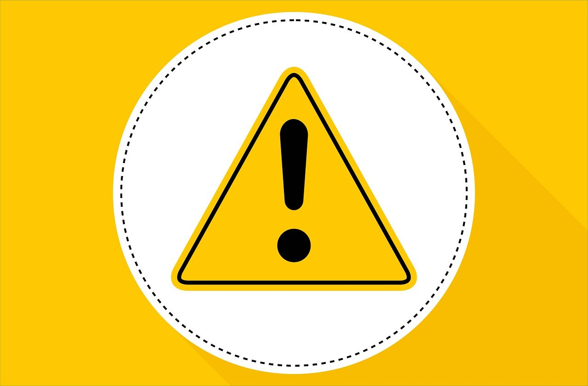

投資で失敗しやすい行動と、詐欺に近づかない考え方
なぜ人は失敗しやすくなるのか（不安・焦り・SNS）

投資の失敗は、知識不足だけが原因ではありません。
多くの場合、きっかけは「感情」です。
将来への不安。
周囲が利益を出しているように見える焦り。
SNSで流れてくる成功体験。
不安が強いときほど、人は「安心できそうな言葉」に引き寄せられます。
冷静な比較よりも、断定的な表現や分かりやすい結論に心が傾きます。
まず知っておきたいのは、自分の心理です。
焦りがあるときは判断が速くなりすぎる。
孤独感があるときは強い言葉を信じやすくなる。
初心者がやりがちな失敗パターン

ポジポジ病（常に何かを買っていないと落ち着かない）
相場を見ていると、何もしない時間に不安を感じます。
その結果、根拠が薄いまま売買を繰り返してしまう状態です。
ナンピンを感情で繰り返す
価格が下がった銘柄を「取り返すため」に買い増す行動。
計画的でないナンピンは、リスクを大きくする可能性があります。
情報を鵜呑みにする
「有名な人が言っていた」「SNSで話題になっている」
それだけで判断すると、リスクの中身を理解しないまま資金を動かすことになります。
「厳選◯選」「限定」「必勝法」が刺さる心理

人は迷っているときほど、“決めてくれる情報”に安心します。
- 厳選3銘柄
- 今だけ限定
- 誰でも簡単
- 必勝法
これらはすべて、不安を和らげる言葉です。
しかし投資に「絶対」はありません。
強い言葉に安心したときこそ、一度立ち止まることが大切です。
注意すべき案件に共通する特徴
- 元本保証を強調する
- 異常に高い固定利回りをうたう
- 「絶対」「確実」と断定する
- 今日中・今すぐと急かす
- 内容より紹介報酬を前面に出す
一つだけで危険とは限りません。
ただし複数重なる場合は、慎重になるべきです。
冷静さを保つためのチェックリスト

- 生活防衛資金は確保できているか
- 内容を自分の言葉で説明できるか
- “絶対”という表現が使われていないか
- 急いで決断しようとしていないか
- 他人任せになっていないか
- 利益だけでなくリスクも理解しているか
- 仕組みや取扱会社が明確か
一つでも曖昧なら、すぐに決める必要はありません。
失敗しないための行動指針（ルール化）

- 1回の投資額は余剰資金の一定割合まで
- 事前に損切りラインを決める
- 情報は複数の情報源で確認する
- 迷ったら一日待つ
「何もしない」ことも、立派な判断です。
投資で重要なのは、勝つことよりも大きく負けないことです。
また、投資関連のサービスを検討する際は、サイトの基本情報を確認する習慣も大切です。 運営会社の記載や所在地、連絡先、金融商品取引業登録の有無など、 公開されている情報に不自然な点がないかを一度確認してみましょう。
ドメインの取得時期なども判断材料のひとつになりますが、 それだけで安全・危険を断定できるものではありません。 大切なのは、情報が十分に開示されているかどうかです。
もし少しでも疑問や不安を感じた場合は、すぐに判断せず、 一度立ち止まって調べることをおすすめします。 納得できないまま利用する必要はありません。
次に読むべきページ
不安を減らすには、理解と比較が必要です。

よくある質問
-
スマホアプリはありますか？
あります。 -
オンラインで申し込めますか？
できます。 -
iDeCoやNISAはありますか？
あります。
ご利用にあたっての注意事項
本記事は情報提供を目的としており、投資の勧誘を目的としたものではありません。株式・投資信託・外国証券等の取引は元本保証がなく、相場変動等により損失が生じる場合があります。取引開始前に、契約締結前交付書面や商品説明書、目論見書等を必ずご確認のうえ、ご自身の判断と責任でお取引ください。
最終更新日：2025-08-22